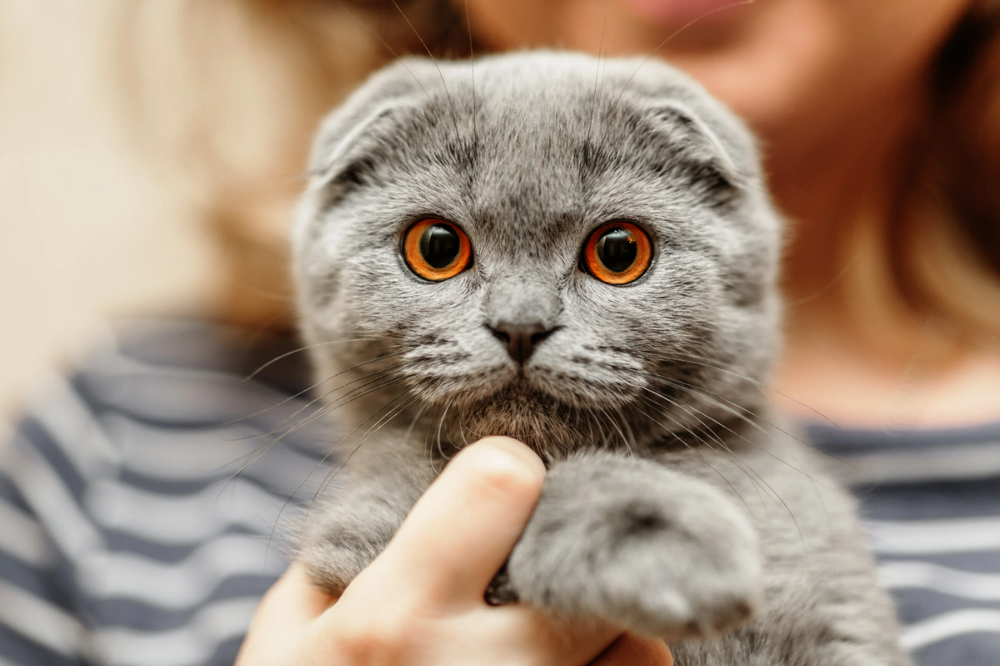

Breeds
So you're looking for a cat, but dont know what breeds there are and how they'd act. You need to see what they look like, how they act, where to find them, etc. So let's start looking! The 3 best breeds will be shown here!
Ragdoll
The Ragdoll is a cat breed with beautiful fur and much known for its amazing blue eyes. Their fur is very soft, they can also be very affectionate. These cats can be a good company for children and familys. Overall very friendly, loving and gentle with their owner.

Scottish Fold
The Scottish Fold is a breed of domesstic cat which is very gentle, quiet, very loving and affectionate. Mostly known for the way their ears "fold", which gives the cat an "owl-like" appearance. They can be easy going and overall very friendly, best for household pets. Also adore human attention.
Persian Longhair
The Persian Longhair is a cat breed that is mostly known for its adorable face amd short muzzle.
One of the cutest cat breeds, even though all cats are cute right? Can be a varaity of colors and very beautiful.
Mostly sweet and well known for how adorable they look.